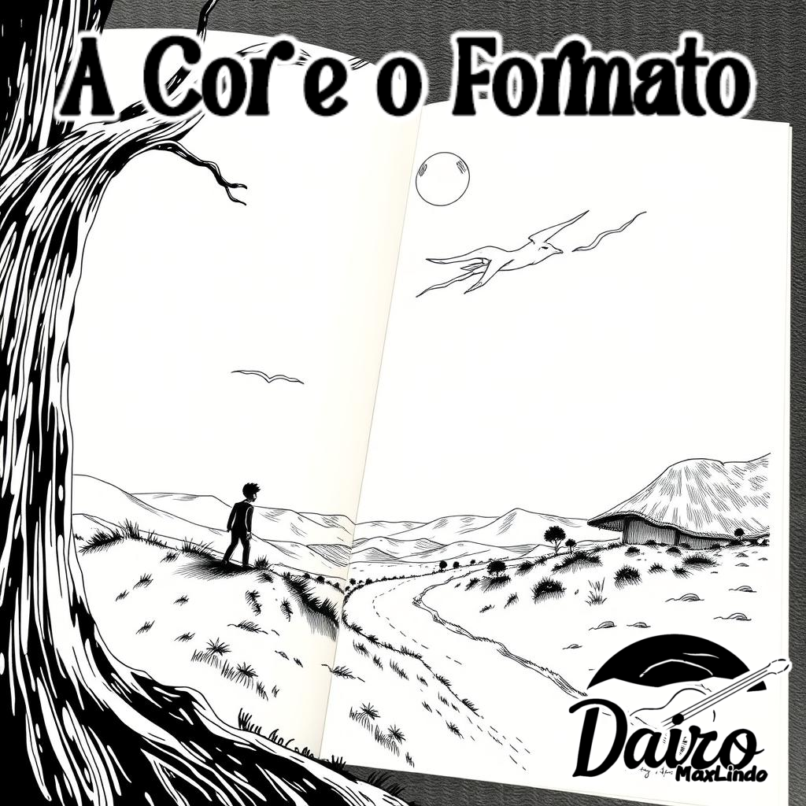

Último lançamento!
Novo: Visão interior
Descrição
Há momentos em que você se sente perdido, sem saber quem é ou o que realmente deseja.
É como tentar discernir uma cor ou formato em meio a uma névoa espessa, onde tudo se mistura e se torna indefinido.
faixa única
- Toda Minha Vida
Letra
- Tentei ser o que esperavam, mas a máscara me sufocou,
Fui uma imagem, um reflexo, de alguém que já não sou.
Forçava meu espirito, escondia a dor que em mim estava,
Mas dentro do peito, a verdade cada vez mais se manifestava. - Pesado é viver a vida de quem você jamais será,
Apenas pra agradar aquele que nunca te compreenderá.
Mas a força está em ser real, agora eu vejo,
Então de que vale se privar desse simples desejo? - Não drene a confiança em si, para alimentar aqueles que apenas querem te segurar.
Deixe que não acreditem em ti, cabe somente a você continuar.
Deixe a mentira pra trás e viva o que é verdadeiro,
A dor passará, e você logo se encontrará inteiro. - O peso das expectativas era mais do que eu podia carregar,
Cada dia fazia um teatro, minha vida era para se encenar.
Apesar de tudo, é inesquecível a lição que meu coração ensinou:
A paz é o caminho que a autenticidade me arranjou. - Os papéis que não te pertencem devem ser esquecidos,
Evite que a opinião alheia interfira no seu destino.
A genuinidade é um alívio, uma luz que clareia o caminho,
Siga em frente, sem medo e sem receio, enfrente o desconhecido. - Não drene a confiança em si, para alimentar aqueles que apenas querem te segurar.
Deixe que não acreditem em ti, cabe somente a você continuar.
Deixe a mentira pra trás e viva o que é verdadeiro,
A dor passará, e você logo se encontrará inteiro. - Não drene a confiança em si, para alimentar aqueles que apenas querem te segurar.
Deixe que não acreditem em ti, cabe somente a você continuar.
Deixe a mentira pra trás e viva o que é verdadeiro,
A dor passará, e você logo se encontrará inteiro. - O peso das expectativas era mais do que eu podia carregar,
Cada dia fazia um teatro, minha vida era para se encenar.
Apesar de tudo, é inesquecível a lição que meu coração ensinou:
A paz é o caminho que a autenticidade me arranjou.
Outros lançamentos
A Cor E O Formato
Descrição
A sensação de assumir a própria unicidade é magnífica, é uma experiência a se desejar para qualquer um.
Faixas
- Um Passo Mais Próximo
- Livre Do Fogo
- Quando O Sol Bate
- Para Sempre
- Escolhas
Tempos Como Esses
Descrição
Algumas pessoas têm dificuldade de superar o que partiu, onde , às vezes, aquilo que já armaram o luto sobre nem morreu, apenas mudou. Uma crítica aos que vivem no passado.
Faixas
- Fim do Rock 'n Roll
- O Que Eles Sabem?
- Aprendendo A Andar Novamente
- Retorno a Serenidade
- Águas Mais Seguras
Gaiola Enferrujada
Descrição
Em um mundo opressor feito o nosso, auto-conhecimento é quem nos liberta.
faixas
- Eu Não Quero Ser Eu
- Toxicidade
- Mudança
- Quebrando o hábito
- Peças